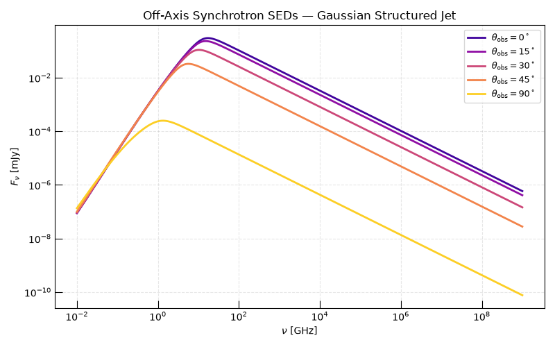
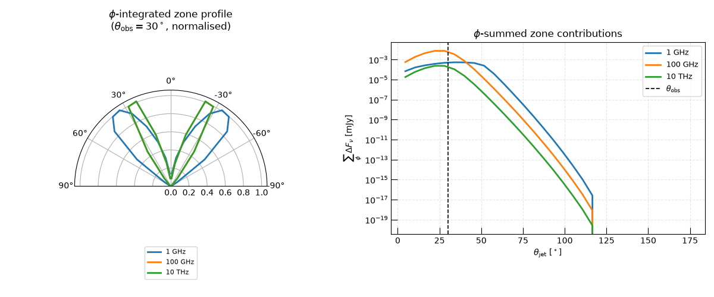
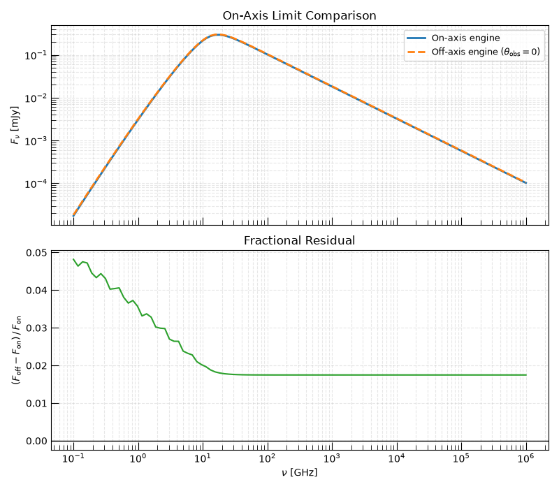

Note
Go to the end to download the full example code.
Off-Axis Synchrotron SEDs from Axisymmetric Outflows#
For an axisymmetric outflow, the observer need not lie on the symmetry axis.
OffAxisAsymmetricSynchrotronEngine extends the on-axis formalism to
an arbitrary polar viewing angle \(\theta_\mathrm{obs}\) by evaluating the
double integral
where \(\mu_\mathrm{obs} = \cos\theta_\mathrm{obs}\,\mu + \sin\theta_\mathrm{obs}\sqrt{1-\mu^2}\cos\phi\) is the line-of-sight cosine and \(\mathcal{D}\) is the relativistic Doppler factor of each zone.
Note that the \(\mu\) integral runs over the full sphere (\(\mu \in [-1,1]\)), not just the front hemisphere: the \(\max(\mu_\mathrm{obs}, 0)\) factor automatically suppresses zones whose projected facing direction is away from the observer.
This gallery demonstrates:
How relativistic beaming shapes the observed SED as the viewing angle changes, using a Gaussian structured jet.
The per-zone flux decomposition for an off-axis observer, illustrating how the azimuthal quadrature resolves the asymmetry introduced by oblique viewing.
The on-axis limit:
OffAxisAsymmetricSynchrotronEnginerecovers theOnAxisAsymmetricSynchrotronEngineresult at \(\theta_\mathrm{obs} = 0\) up to quadrature differences between the two node placements.
See Also#
- The Off-Axis Axisymmetric Shell Model
Theory section for the off-axis engine and its radiative-transfer conventions.
# sphinx_gallery_thumbnail_number = 2
import matplotlib.pyplot as plt
import numpy as np
from astropy import units as u
from trilobite.radiation.synchrotron import (
OffAxisAsymmetricSynchrotronEngine,
OnAxisAsymmetricSynchrotronEngine,
)
from trilobite.radiation.synchrotron.electron_distributions import PowerLaw
from trilobite.utils.plot_utils import set_plot_style
Engine Setup#
OffAxisAsymmetricSynchrotronEngine requires two quadrature
resolutions: \(n_\theta\) Gauss–Legendre nodes for the polar
(\(\mu\)) integral over \([-1, 1]\) and \(n_\phi\) nodes for
the azimuthal (\(\phi\)) integral over \([0, \pi]\).
Increasing either improves accuracy for structured profiles or large
\(\theta_\mathrm{obs}\).
Structured Jet Model#
We define a Gaussian structured jet: the magnetic field declines smoothly from the jet axis, while the emission radius and relativistic speed are uniform across all zones.
with \(\sigma_\theta = \pi/6\). Zones near \(\theta \approx \pi\) (the counter-jet) carry the same B structure but face away from any observer at \(\theta_\mathrm{obs} < \pi/2\).
B_core = 0.5 * u.G
sigma_theta = np.pi / 6.0
R0 = 1e16 * u.cm
beta = 0.95
p = 2.5
gamma_min, gamma_max = 1.0, 1e8
epsilon_e, epsilon_B = 0.1, 0.1
def make_jet_model(theta_nodes: np.ndarray):
"""Return B (Quantity), N (array), for a given set of theta nodes."""
B = B_core * np.exp(-0.5 * (theta_nodes / sigma_theta) ** 2)
R = R0 * np.ones(len(theta_nodes))
shell = 1e15 * u.cm * np.ones(len(theta_nodes))
gamma = np.geomspace(gamma_min, gamma_max, 800)
norm = PowerLaw.normalize_from_magnetic_field(
B, epsilon_B, epsilon_e, p=p, gamma_min=gamma_min, gamma_max=gamma_max
)
N = norm.to_value(u.cm**-3)[:, None] * PowerLaw.pdf(gamma, p=p, gamma_min=gamma_min, gamma_max=gamma_max)
return B, R, shell, gamma, N
B, R, shell_thickness, gamma, N_gamma = make_jet_model(theta)
Effect of Viewing Angle on the Observed SED#
We compute the total spectral flux density for five viewing angles ranging from on-axis (\(\theta_\mathrm{obs} = 0\)) to edge-on (\(\theta_\mathrm{obs} = 90^\circ\)). Relativistic beaming strongly favours on-axis observers: as \(\theta_\mathrm{obs}\) increases, the Doppler factor \(\mathcal{D}\) decreases for the approaching zones and the line-of-sight projected area shrinks, suppressing the observed flux.
nu = np.geomspace(1e7, 1e18, 300) * u.Hz
D_lum = 100 * u.Mpc
theta_obs_deg = [0, 15, 30, 45, 90]
theta_obs_values = np.deg2rad(theta_obs_deg)
labels = [rf"$\theta_\mathrm{{obs}} = {d}^\circ$" for d in theta_obs_deg]
colors = plt.cm.plasma(np.linspace(0.1, 0.9, len(theta_obs_values)))
set_plot_style()
fig, ax = plt.subplots(figsize=(8, 5))
for theta_obs, label, color in zip(theta_obs_values, labels, colors):
F_nu = engine.compute_flux_density(
nu,
B=B,
N=N_gamma,
shell_thickness=shell_thickness,
R=R,
beta=beta,
theta_obs=theta_obs,
luminosity_distance=D_lum,
gamma=gamma,
).to("mJy")
ax.loglog(nu.to_value(u.GHz), F_nu.to_value("mJy"), color=color, lw=2, label=label)
ax.set_xlabel(r"$\nu\ [\mathrm{GHz}]$")
ax.set_ylabel(r"$F_\nu\ [\mathrm{mJy}]$")
ax.set_title("Off-Axis Synchrotron SEDs — Gaussian Structured Jet")
ax.legend(fontsize=9)
ax.grid(True, which="both", ls="--", alpha=0.3)
plt.tight_layout()
plt.show()

The on-axis SED (\(\theta_\mathrm{obs} = 0^\circ\)) is brightest: the core sees maximum Doppler boosting (\(\mathcal{D} \gg 1\)). Moving off-axis de-boosts the core while only weakly changing the wings (low \(B\), low \(\mathcal{D}\) contrast), flattening the spectrum. By \(90^\circ\) only zones near the limb contribute, drastically reducing the observed flux.
Per-Zone Flux Decomposition#
compute_sightline_flux_density()
returns the area- and Doppler-weighted flux contribution from each
\((\theta_i, \phi_j)\) zone, shaped (n_nu, n_theta, n_phi).
Summing over the \(\phi\) axis gives the \(\theta\)-profile of
emission for a given observer angle.
We examine this decomposition at \(\theta_\mathrm{obs} = 30^\circ\) for three representative frequencies.
theta_obs_demo = np.deg2rad(30)
nu_demo = np.array([1e9, 1e11, 1e13]) * u.Hz
F_zone = engine.compute_sightline_flux_density(
nu_demo,
B=B,
N=N_gamma,
shell_thickness=shell_thickness,
R=R,
beta=beta,
theta_obs=theta_obs_demo,
luminosity_distance=D_lum,
gamma=gamma,
)
# F_zone shape: (n_nu, n_theta, n_phi); sum over phi → (n_nu, n_theta)
F_theta = F_zone.sum(axis=-1)
nu_labels = [r"$1\ \mathrm{GHz}$", r"$100\ \mathrm{GHz}$", r"$10\ \mathrm{THz}$"]
palette = ["C0", "C1", "C2"]
set_plot_style()
fig = plt.figure(figsize=(12, 5))
ax_polar = fig.add_subplot(121, projection="polar")
ax_profile = fig.add_subplot(122)
for i, (label, color) in enumerate(zip(nu_labels, palette)):
vals = np.abs(F_theta[i].to_value("mJy"))
vals_norm = vals / vals.max() if vals.max() > 0 else vals
# Mirror the profile onto [-π, π] for visual clarity
th_full = np.concatenate([-theta[::-1], theta])
v_full = np.concatenate([vals_norm[::-1], vals_norm])
ax_polar.plot(th_full, v_full + 0.01, color=color, lw=2, label=label)
ax_polar.set_theta_zero_location("N")
ax_polar.set_thetamin(-90)
ax_polar.set_thetamax(90)
ax_polar.set_title(
r"$\phi$-integrated zone profile" + "\n" + r"($\theta_\mathrm{obs} = 30^\circ$, normalised)",
pad=15,
)
ax_polar.legend(loc="lower center", bbox_to_anchor=(0.5, -0.25), fontsize=8)
for i, (label, color) in enumerate(zip(nu_labels, palette)):
ax_profile.semilogy(
np.rad2deg(theta),
np.abs(F_theta[i].to_value("mJy")),
color=color,
lw=2,
label=label,
)
ax_profile.axvline(np.rad2deg(theta_obs_demo), ls="--", color="k", lw=1.2, label=r"$\theta_\mathrm{obs}$")
ax_profile.set_xlabel(r"$\theta_\mathrm{jet}\ [^\circ]$")
ax_profile.set_ylabel(r"$\sum_\phi\,\Delta F_\nu\ [\mathrm{mJy}]$")
ax_profile.set_title(r"$\phi$-summed zone contributions")
ax_profile.legend(fontsize=9)
ax_profile.grid(True, which="both", ls="--", alpha=0.3)
plt.tight_layout()
plt.show()

Zones near \(\theta_\mathrm{jet} = 0\) (jet axis) dominate at high frequencies because the strong local field pushes \(\nu_c \propto B\gamma^2\) to high values and the Doppler boost is largest there. At 1 GHz the extended wings, which subtend larger projected area, contribute comparably. The dashed line marks \(\theta_\mathrm{obs}\) — zones to the left are approaching, zones to the right are receding.
On-Axis Limit#
At \(\theta_\mathrm{obs} = 0\) the off-axis integral reduces to the on-axis integral because \(\mu_\mathrm{obs} = \mu\) and back-facing zones (\(\mu < 0\)) are zeroed by the \(\max(\mu_\mathrm{obs},0)\) factor, leaving only the front hemisphere.
OnAxisAsymmetricSynchrotronEngine integrates only over
\(\mu \in [0,1]\) with different GL node placement than the off-axis
engine’s \([-1,1]\) nodes. We evaluate the same physical jet profile
on each engine’s own theta grid and compare the resulting SEDs.
engine_on = OnAxisAsymmetricSynchrotronEngine(n_theta=30)
engine_on.load_avg_first_kernel()
# Evaluate the jet profile on the on-axis engine's theta grid (θ ∈ [0, π/2])
B_on, R_on, depth_on, gamma_on, N_on = make_jet_model(engine_on.theta)
nu_check = np.geomspace(1e8, 1e15, 100) * u.Hz
F_on = engine_on.compute_flux_density(
nu_check,
B=B_on,
N=N_on,
slab_depth=depth_on,
R=R_on,
beta=beta,
luminosity_distance=D_lum,
gamma=gamma_on,
).to("mJy")
# Evaluate the jet profile on the off-axis engine's theta grid (θ ∈ [0, π])
F_off_0 = engine.compute_flux_density(
nu_check,
B=B,
N=N_gamma,
shell_thickness=shell_thickness,
R=R,
beta=beta,
theta_obs=0.0,
luminosity_distance=D_lum,
gamma=gamma,
).to("mJy")
set_plot_style()
fig, axes = plt.subplots(2, 1, figsize=(8, 7), sharex=True)
ax_sed, ax_res = axes
ax_sed.loglog(nu_check.to_value(u.GHz), F_on.to_value("mJy"), lw=2, label="On-axis engine")
ax_sed.loglog(
nu_check.to_value(u.GHz),
F_off_0.to_value("mJy"),
lw=2,
ls="--",
label=r"Off-axis engine ($\theta_\mathrm{obs} = 0$)",
)
ax_sed.set_ylabel(r"$F_\nu\ [\mathrm{mJy}]$")
ax_sed.set_title("On-Axis Limit Comparison")
ax_sed.legend(fontsize=9)
ax_sed.grid(True, which="both", ls="--", alpha=0.3)
residual = (F_off_0 - F_on) / F_on
ax_res.semilogx(nu_check.to_value(u.GHz), residual.to_value(""), color="C2", lw=1.5)
ax_res.axhline(0, color="k", lw=1)
ax_res.set_xlabel(r"$\nu\ [\mathrm{GHz}]$")
ax_res.set_ylabel(r"$(F_\mathrm{off} - F_\mathrm{on})\,/\,F_\mathrm{on}$")
ax_res.set_title("Fractional Residual")
ax_res.grid(True, which="both", ls="--", alpha=0.3)
plt.tight_layout()
plt.show()

The two engines agree to within a few percent across the full spectral range. Residuals arise from the different GL node placements: the on-axis engine integrates over \(\mu \in [0,1]\) while the off-axis engine integrates over \([-1,1]\) with back-facing nodes zeroed at run time. Because each engine evaluates the jet profile on its own theta grid (with slightly different sampling of the Gaussian core), the profiles fed into each calculation are not identical — this is the dominant source of discrepancy. Using a smooth, slowly varying profile and more GL nodes narrows the gap further.
Total running time of the script: (0 minutes 46.049 seconds)